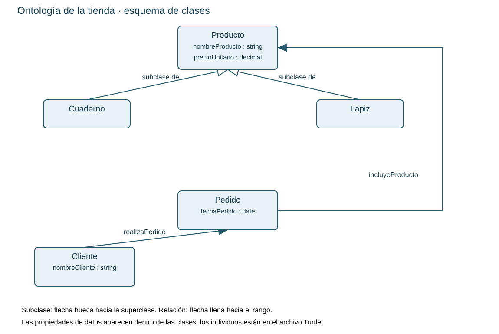

INGENIERÍA WEB · UCC · 30 MINUTOS
Identifique conceptos, relaciones e individuos; agregue una mochila y justifique qué conocimiento se obtiene de la jerarquía.
Diagrama editable · Turtle base · Respuestas

Ana realiza pedido001. El pedido incluye cuaderno001 de 12000 COP y lapiz001 de 2500 COP.
@prefix ex: <https://example.org/tienda#> .
@prefix owl: <http://www.w3.org/2002/07/owl#> .
@prefix rdf: <http://www.w3.org/1999/02/22-rdf-syntax-ns#> .
@prefix rdfs: <http://www.w3.org/2000/01/rdf-schema#> .
@prefix xsd: <http://www.w3.org/2001/XMLSchema#> .
ex:OntologiaTienda a owl:Ontology ;
rdfs:label "Ontología didáctica de una tienda"@es .
ex:Producto a owl:Class .
ex:Cuaderno a owl:Class ; rdfs:subClassOf ex:Producto .
ex:Lapiz a owl:Class ; rdfs:subClassOf ex:Producto .
ex:Cliente a owl:Class .
ex:Pedido a owl:Class .
ex:realizaPedido a owl:ObjectProperty ;
rdfs:domain ex:Cliente ; rdfs:range ex:Pedido .
ex:incluyeProducto a owl:ObjectProperty ;
rdfs:domain ex:Pedido ; rdfs:range ex:Producto .
ex:nombreProducto a owl:DatatypeProperty ;
rdfs:domain ex:Producto ; rdfs:range xsd:string .
ex:precioUnitario a owl:DatatypeProperty ;
rdfs:domain ex:Producto ; rdfs:range xsd:decimal .
ex:nombreCliente a owl:DatatypeProperty ;
rdfs:domain ex:Cliente ; rdfs:range xsd:string .
ex:fechaPedido a owl:DatatypeProperty ;
rdfs:domain ex:Pedido ; rdfs:range xsd:date .
ex:ana a ex:Cliente ;
ex:nombreCliente "Ana" ;
ex:realizaPedido ex:pedido001 .
ex:cuaderno001 a ex:Cuaderno ;
ex:nombreProducto "Cuaderno cuadriculado" ;
ex:precioUnitario "12000"^^xsd:decimal .
ex:lapiz001 a ex:Lapiz ;
ex:nombreProducto "Lápiz HB" ;
ex:precioUnitario "2500"^^xsd:decimal .
ex:pedido001 a ex:Pedido ;
ex:fechaPedido "2026-10-26"^^xsd:date ;
ex:incluyeProducto ex:cuaderno001, ex:lapiz001 .
Las inferencias se justifican manualmente. Este material no ejecuta un razonador. Para representar cantidades y precios históricos por línea, amplíe el dominio con DetallePedido.
Consulte README.txt para el cronograma, fuentes y orientaciones. La carpeta solucion_docente se utiliza al cierre.